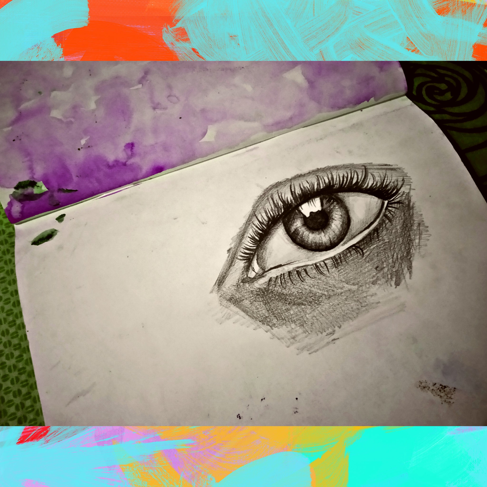
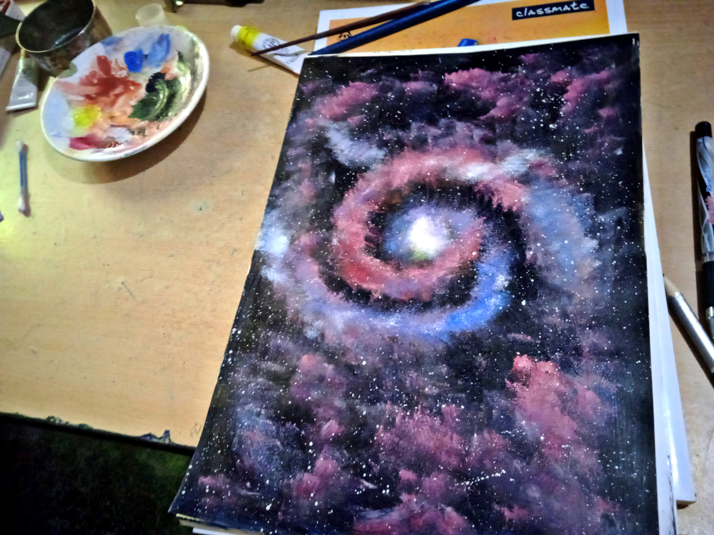
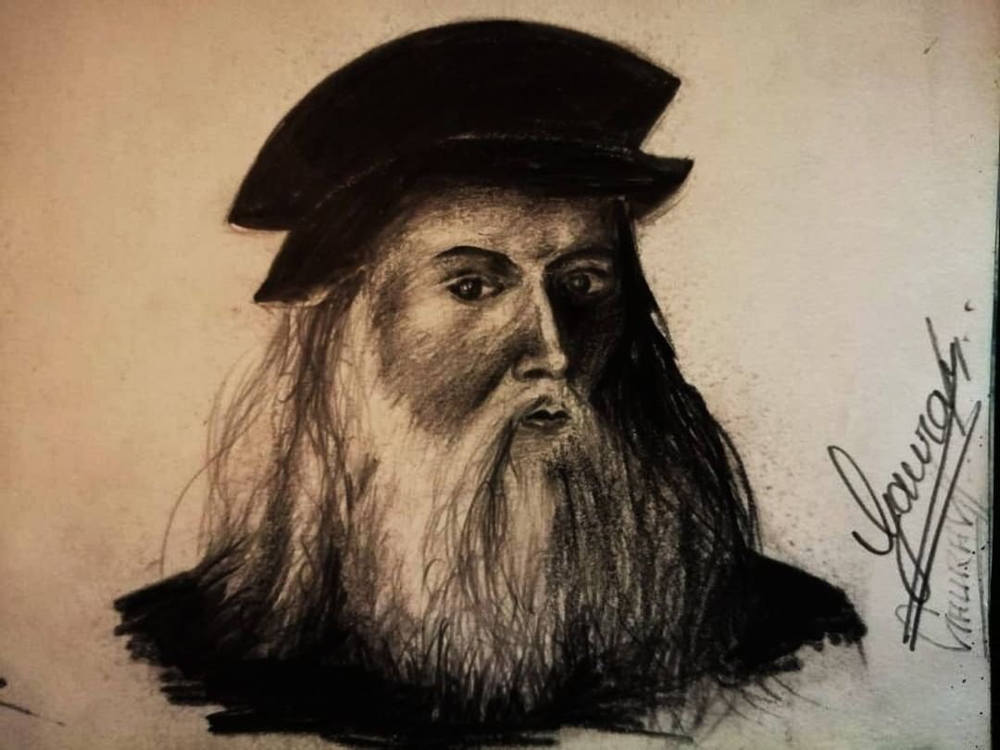
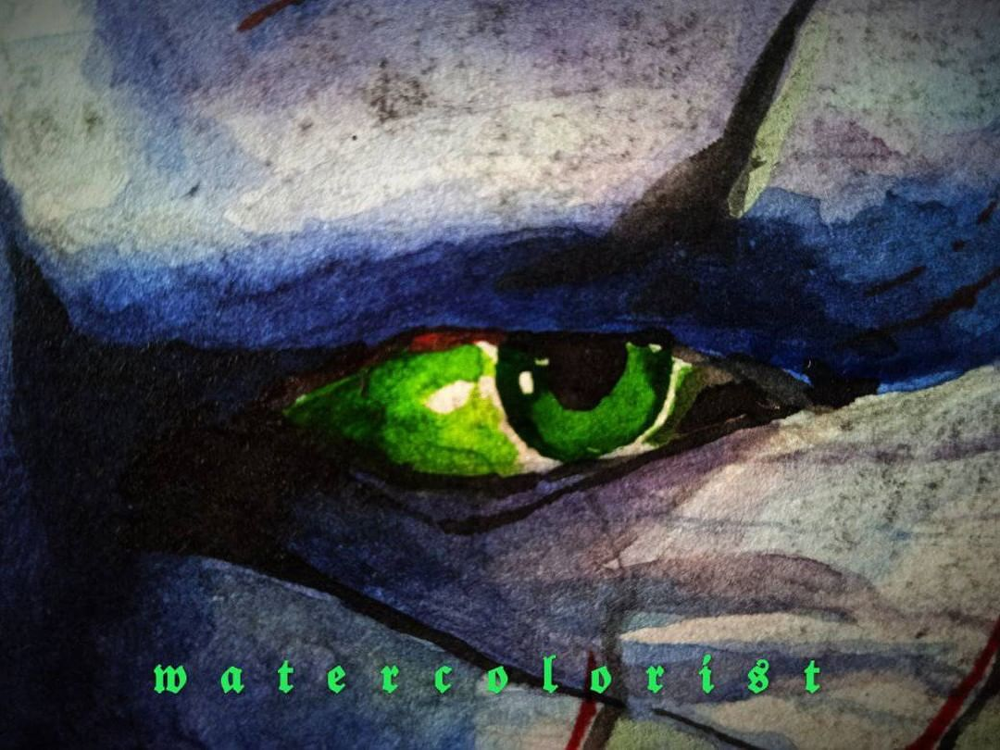
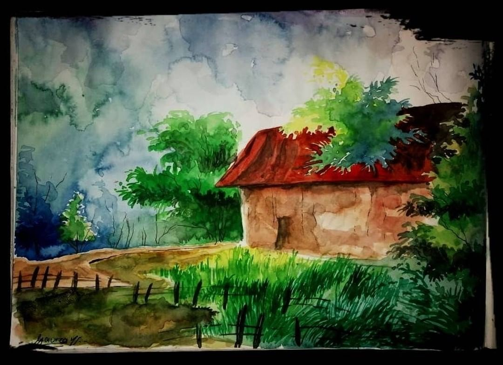
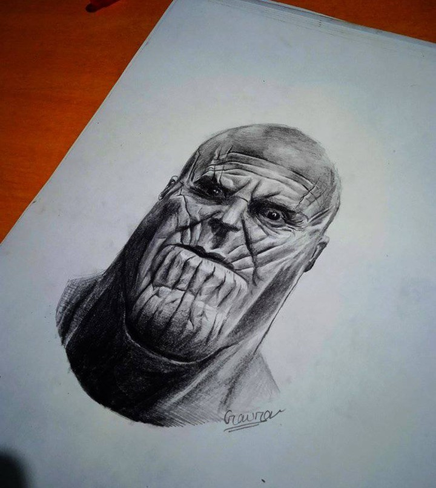

 
 
Did you know that creating beautiful work through painting encourages a more optimistic approach to life? A painter starts by setting goals to advance their painting skills and become a more experienced artist. When a person reaches the next skill level, their achievement inspires a positive emotional reaction. Over time, a painter’s progress and skills deter negative emotions and provide pleasure and happiness for the individual. Painting boosts self-esteem and inspires people to reach new levels of skill. Playing around with different painting types can help you understand what triggers certain feelings such as happiness, sadness, love, or anger. Often, the emotions you feel while creating this work can project onto the people that view your paintings. Painters have the ability to bring others happiness, sharing their positive mindset with viewers. This skill makes painters better company for themselves and those around them.